5 Segmentación sin conocimiento del dominio
5.1 Umbralización
5.1.1 Umbralización global
La umbralización global utiliza un único umbral para segmentar toda la imagen.
\[ dst(x,y)= \begin{cases} valor_x, & \text{si } src(x,y)>thresh \\ valor_y, & \text{si } src(x,y)\leq thresh \end{cases} \]
Donde:
- \(valor_x\): valor asignado cuando se supera el umbral.
- \(valor_y\): valor asignado cuando no se supera el umbral.
Los principales tipos de umbralización son:
- Binaria: Asigna el valor
maxValuesi el valor del píxel el mayor que el umbral y 0 en caso contrario. - Binaria inversa: Invierte los valores asignados por la umbralización binaria.
- Truncamiento: Asigna el valor umbral si el el valor del píxel es mayor que el umbral, de lo contrario asigna el valor original del píxel.
- Puesta a cero: Conversa los valores mayores que el umbral y el resto las sustituye por 0.
- Puesta a cero invertido: Conserva los valores menores o iguales al umbral y el resto los sustituye por 0.
Los histogramas de la Figura 5.1 permiten analizar cómo se modifica la distribución de intensidades con cada método. Mientras las umbralizaciones binarias concentran los píxeles en dos valores, los métodos de truncamiento y puesta a cero conservan parte de las intensidades originales.
En la Figura 5.2 se puede observar que los resultados son dependientes del contraste y la iluminación de cada imagen.
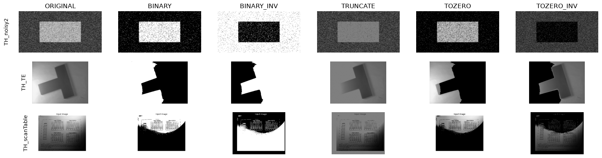
5.1.2 Umbralización local
La umbralización local, calcula un umbral \(T(x, y)\) para cada píxel a partir de una ventana centrada en él.
Dentro de las ventana OpenCV utiliza dos métodos para calcular el umbral:
- Media: El umbral es la media del área vecina menos una constante \(C\).
- Gaussiana: El umbral es una media ponderada gaussiana del área vecina menos una constante \(C\).
En la Figura 5.3 se muestra como la umbralización local, permite recuperar una mayor cantidad de detalles que la umbralización global sobre imágenes que presentan variaciones en la iluminación, ya permite ajustar el umbral de cada zona, las zonas iluminadas tendrán un umbral alto mientras que las oscuras presentarán uno más bajo.

En la Figura 5.4 se observa como al aumentar el valor de \(C\) se reduce la presencia de píxeles negros aislados en el fondo, mientras que el valor de blockSize determina el tamaño de la la extensión que se utiliza para calcular el umbral.

Se analiza si es posible segmentar completamente el rectángulo de la imagen TH_noisy2.png o la pieza en forma de T de TH_TE.gif utilizando únicamente umbralización local.
Para analizar el efecto del tamaño de la ventana, sobre el resultado, se selecciona un recorte que contiene parte del rectángulo y del fondo.
En la Figura 5.5, se observa como una ventana más pequeña, produce una segmentación más fragmentada, dado que el umbral se calcula a partir de una región reducida de píxeles vecinos que tienen intensidades similares al píxel central de la ventana. Al aumentar el tamaño de la ventana está incorpora píxeles de las dos regiones del recorte lo que favorece su diferenciación asemejando su comportamiento a una umbralización global.
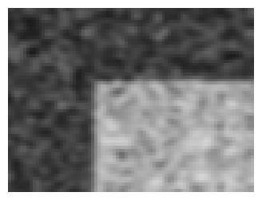
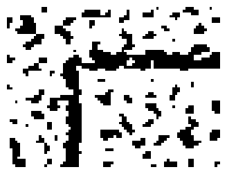
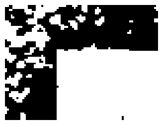
Como se muestra en las figuras Figura 5.6 y Figura 5.7, es posible obtener una segmentación bastante completa utilizando tamaños de ventana grandes, para que las ventanas incluyan píxeles del objeto que estamos buscando segmentar y del fondo.
En el caso del rectángulo se obtiene un buen resultado con blockSize=511 y \(C=10\), mientras que para la pieza en forma de T el mejor resultado se obtiene con blockSize=501 y \(C=20\).
Sin embargo, ninguna de las configuraciones consigue una segmentación completa y sin errores, habría que considerar otras técnicas.
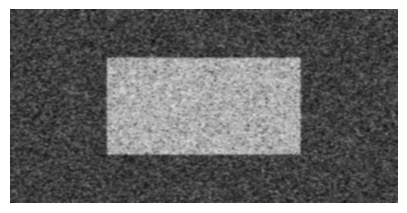
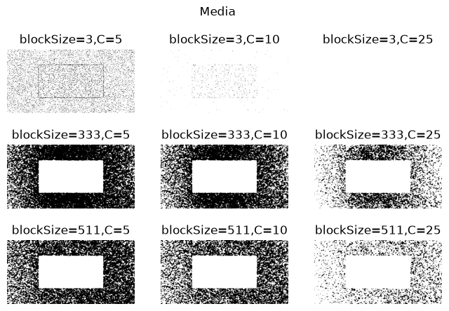

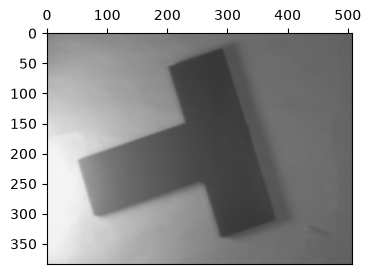
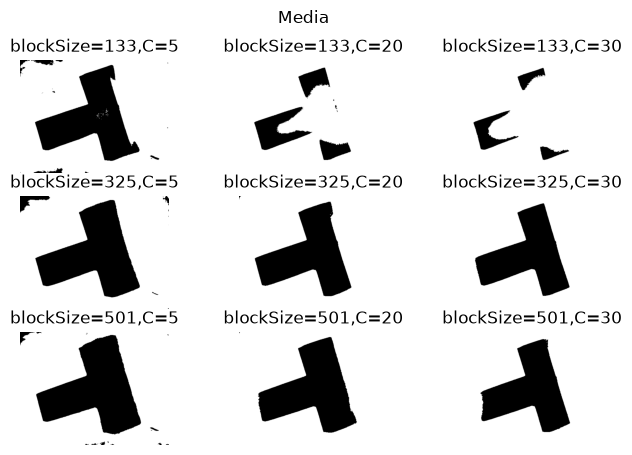
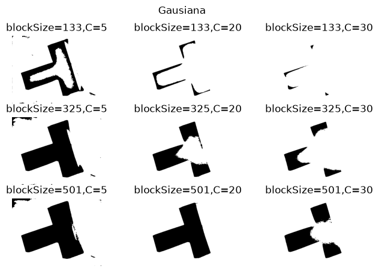
5.2 K-means clustering
La Figura 5.8 muestra la imagen original con su histograma de intensidades, se observa una concentración elevada en las intensidades bajas, asociadas a las regiones oscuras y al fondo de la imagen.
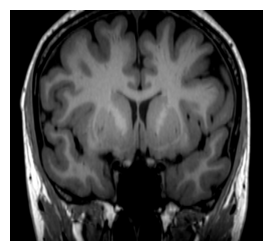

La Figura 5.9 muestra los resultados de aplicar el K-means con diferente número de clústeres. Para cada configuración se muestra la imagen segmentada junto con el histograma de intensidades original, coloreado según los grupos obtenidos, las líneas verticales naranjas indican la posición de los centroides calculados por el algoritmo.
Para valores reducidos de k, como k=2 y k=3, la segmentación permite diferenciar regiones más oscuras de las estructuras del cerebro, pero se pierde el detalle anatómico.
Al aumentar el número de clusters k=5 y k=7, presenta una mayor variedad de intensidades intermedias y altas. Esto permite visualizar más estructuras del tejido cerebral.
Para k=12 y k=15 se incorporan nuevos centroides que mejoran la representación de las transiciones entre niveles de gris permitiendo distinguir más detalles de la imagen.
Los resultados muestran que aumentar el número de clústeres mejora la fidelidad de la imagen segmentada pero aumenta la complejidad de la imagen.

5.3 Segmetación con MeanShift
El algoritmo Mean Shift que nos permite suavizar una imagen conservando los bordes. OpenCV proporciona una implementación de este algoritmo, funciona desplazando de forma iterativa una ventana de búsqueda hacia regiones de mayor densidad en el espacio conjunto de espacio y color. Para ello, se consideran los píxeles que cumplen las siguientes condiciones:
\[ \left\{ (x,y): \begin{aligned} X-\texttt{sp} &\leq x \leq X+\texttt{sp},\\ Y-\texttt{sp} &\leq y \leq Y+\texttt{sp},\\ \|(R,G,B)-(r,g,b)\|_2 &\leq \texttt{sr} \end{aligned} \right\} \]
Donde:
- sp: representa el radio de la ventana espacial y determina la distancia máxima considerada entre píxeles vecinos.
- sr: establece el radio de similitud cromática, limitando la diferencia de color entre los píxeles considerados.
- (X,Y): corresponde a la posición central de la ventana de búsqueda.
- (R,G,B): representa el color de referencia de la ventana.
Mediante este proceso, los píxeles con características espaciales y cromáticas similares convergen hacia valores representativos próximos, dando lugar a regiones de color más uniforme.
La Figura 5.10 presenta los resultados de aplicar Mean Shift con diferentes valores de los parámetros sp y sr, con el objetivo de analizar su influencia en el suavizado y la conservación de los detalles.
En la Figura 5.10 (a) se aumenta el radio espacial, manteniedo el mismo radio de color. Al aumentar el radio espacial, el algoritmo considera vecinos píxeles más alejados favoreciendo la formación de regiones homogéneas más grandes, se reducen detalles pero las estructuras principales permanecen reconocibles.
En la Figura 5.10 (b) mantiene el radio espacial y se incrementa el radio de color. El aumento del radio de color permite agrupar píxeles con diferencias de color mayores, lo que se traduce en un suavizado más intenso.

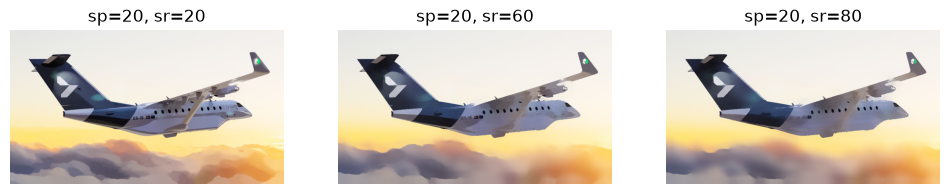
El parámetro maxLevel, establece el nivel máximo de una pirámide guassiana empleada durante el procesamiento en maxLevel+1.
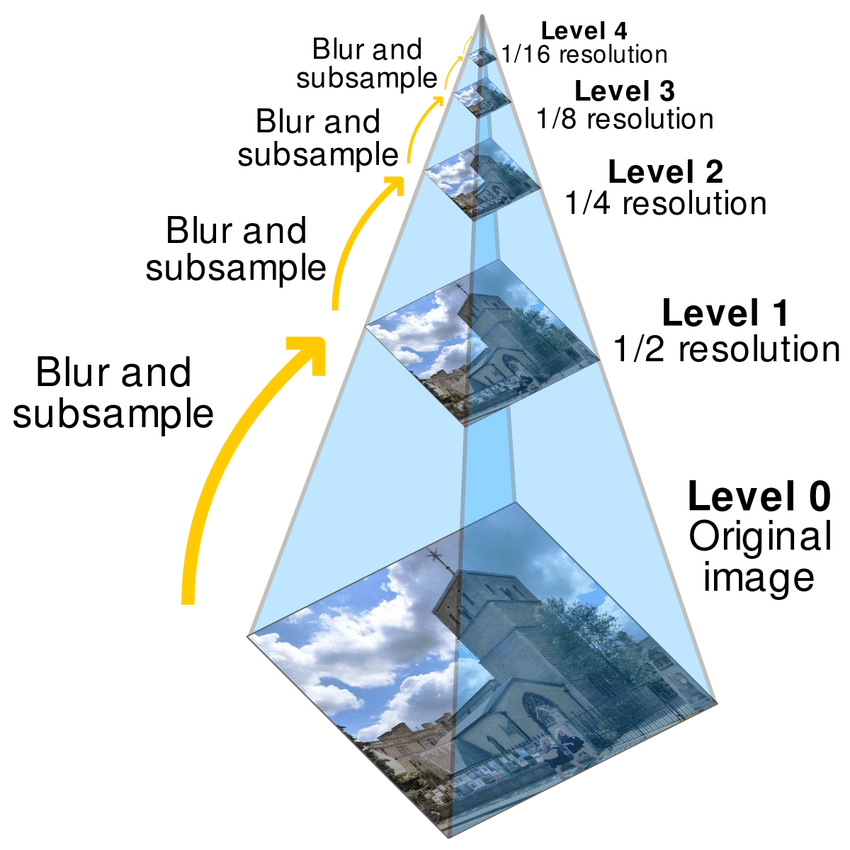
En la Figura 5.12 se comparan los resultados con distintos niveles de maxLevel. Las tres configuraciones mantienen las principales regiones de color y la estructura general de la escena, las diferencia aparecen principalmente en las zonas con variaciones locales de color y en delimitación de algunas regiones.

5.4 Segmentación Watershed
En la figura Figura 5.13 se muestra la segmentación de los lóbulos cerebrales utilizando un umbral de Otsu sobre la imagen suavizada y enmascarada con una elipse que representa la región del cerebro.

En la Figura 5.14 (a) se muestran las transformaciones de fondo seguro, primer plano seguro y región desconocida que se utilizan para construir la máscara de regiones segmentadas, Figura 5.14 (b), que es utilizada como semilla por el algoritmo de watershed.


En la Figura 5.15 se muestra el resultado de la aplicación del algoritmo watershed para la separación de los lóbulos.
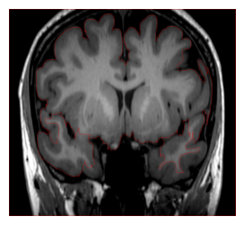